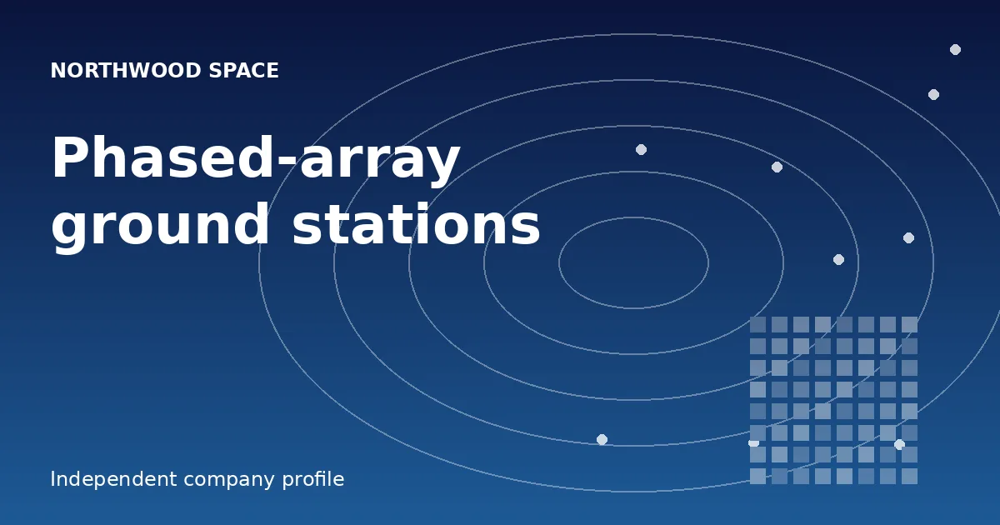

Launching got cheap, but talking to satellites did not. This is how Northwood Space wants to rebuild the Earth end of every mission.

Based in El Segundo, California, Northwood Space makes the ground hardware that links spacecraft to people. Its Portal system is a digital phased array intended for volume production and installation within days, where dish-based sites often need years. New to the company? Start with the Northwood Space resource.
Rockets are cheaper and constellations keep growing, yet the dishes that uplink commands and downlink data are largely a 1960s design. Booking ground access can now outlast the build and launch of the satellite. Northwood sells itself as an end-to-end provider, covering concept, deployment and live data delivery.
A parabolic dish has to swing toward a single satellite. Portal is a flat all-digital array that steers beams electronically, so one site can follow multiple objects at the same time.
Bridgit Mendler (CEO) was a Disney Channel actress and singer before earning MIT and Harvard degrees and moving into space. Griffin Cleverly is CTO and Shaurya Luthra runs software, both formerly Lockheed Martin engineers. The concept grew in the COVID-19 pandemic, when Mendler and Cleverly assembled antennas from hardware-store parts; the name comes from a New Hampshire lake.